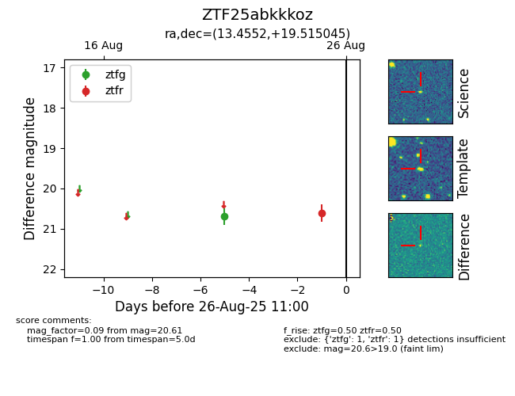

Target ZTF25abkkkoz at 2025-08-26 11:00, see:
FINK: fink-portal.org/ZTF25abkkkoz
Lasair: lasair-ztf.lsst.ac.uk/objects/ZTF25abkkkoz
ALeRCE: alerce.online/object/ZTF25abkkkoz
alt names
ZTF25abkkkoz (ztf,fink)
coordinates:
equatorial (ra, dec) = (13.4552,+19.51505)
galactic (l, b) = (123.7041,-43.35313)
photometry
last ztfg=20.70, ztfr=20.61
1 ztfg, 1 ztfr detections
